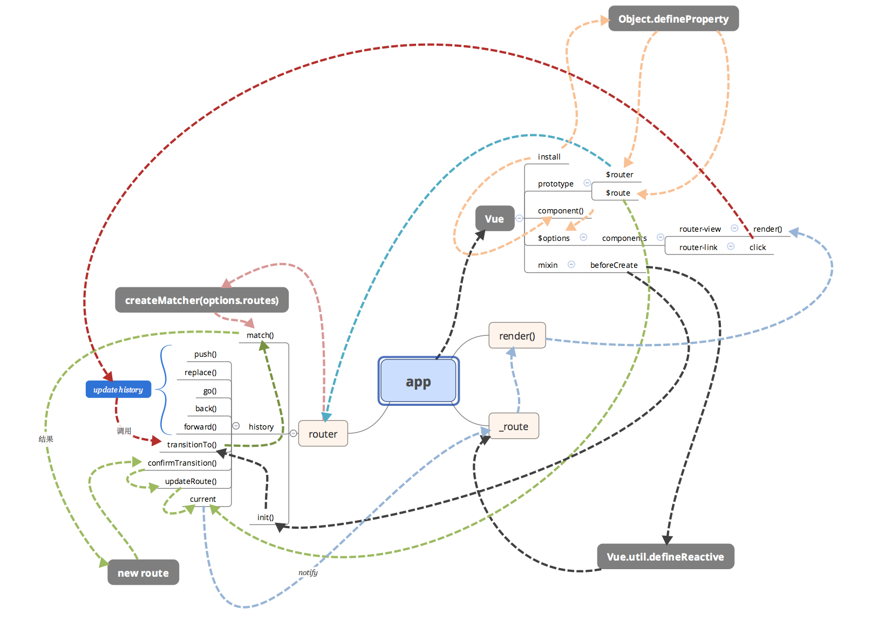

vue源码分析、手写响应式原理等。
写在前面
vue 与 juqery 的区别
通过 TODO List 实现的例子总结得出
1.数据视图分离，解耦（开放封闭原则：对扩展开放，对修改封闭）。
2.数据驱动视图，只关心数据变化，dom 操作被封装。
MVC
- View 传送指令到 Controller
- Controller 完成业务逻辑后，要求 Model 改变状态
- Model 将新的数据发送到 View，用户得到反馈
View 了解 Controller，Controller 了解 Model，而 View 能够直接访问 Model。
例如用户点击了一个按钮（操作了视图），然后 controller 进行业务逻辑操作，最后将操作结果发送给视图。
MVVM
- M 数据，对应于 vue 中的 data
- V 视图，对应于 DOM
- VM 视图模型，对应于 vue 实例
视图通过事件绑定，经过视图模型操作数据，数据通过数据绑定，经过视图模型修改视图
源码分析思路过程
首先文档，然后通过一个简单的例子开始，从入口文件一步步分析，抓住主线。
vue 组件通常都有一个 install 方法，用于将组件装在到 vue 对象上。
vue 声明周期
vue 源码分析
推荐文章 Vue 源码学习
vue 三要素
- 响应式：监听数据变化。
- 模板引擎：解析模板指令。
- 渲染：模板结合 modal 如何生成 DOM，当产生变化时更新 DOM。
vue 构造函数
整体流程如下：
1、Vue.prototype 下的属性和方法的挂载主要是在 src/core/instance 目录中的代码处理的。
2、Vue 下的静态属性和方法的挂载主要是在 src/core/global-api 目录下的代码处理的。
3、web-runtime.js 主要是添加 web 平台特有的配置、组件和指令，web-runtime-with-compiler.js 给 Vue 的$mount 方法添加 compiler 编译器，支持 template。
初始化，绑定原型对象属性
定义 Vue 构造函数，然后以 Vue 构造函数为参数，调用了五个方法，最后导出 Vue。这些方法的作用，就是在 Vue 的原型 prototype 上挂载方法或属性。
1 | function Vue (options) { |
绑定静态属性和方法
导入上文导出的 Vue（已经在原型上挂载了方法和属性），将 Vue 作为参数传给 initGlobalAPI ，最后又在 Vue.prototype 上挂载了 $isServer，在 Vue 上挂载了 version 属性。
安装指令和组件
覆盖 Vue.config 的属性，将其设置为平台特有的一些方法。Vue.options.directives 和 Vue.options.components 安装平台特有的指令和组件。在 Vue.prototype 上定义__patch__和 $mount。
覆盖$mount,编译模板函数
缓存来自 web-runtime.js 文件的$mount函数，然后覆盖覆盖了Vue.prototype.$mount。在 Vue 上挂载 compile，compileToFunctions 函数的作用，就是将模板 template 编译为 render 函数。
整体来看执行顺序
1 | initLifecycle(vm) |
数据响应系统
模型通过 Observer、Dep、Watcher、Directive 等一系列对象的关联，最终和视图建立起关系。
推荐文章Vue 源码解析：深入响应式原理
- 通过 Observer 对 data 做监听，并且提供了订阅某个数据项变化的能力。
- 把 template 编译成一段 document fragment，然后解析其中的 Directive，得到每一个 Directive 所依赖的数据项和 update 方法。
- 通过 Watcher 把上述两部分结合起来，即把 Directive 中的数据依赖通过 Watcher 订阅在对应数据的 Observer 的 Dep 上。当数据变化时，就会触发 Observer 的 Dep 上的 notify 方法通知对应的 Watcher 的 update，进而触发 Directive 的 update 方法来更新 DOM 视图，最后达到模型和视图关联起来。
通过一个简单的例子来看一下
1 | var data = { |
渲染与重新渲染
模板->render 函数->DOM。将 template 编译成 render 函数，这个函数返回一个虚拟 dom 节点，最终渲染成 dom。
当 render 执行的时候，所依赖的变量就会被求值，并被收集为依赖。按照 Vue 中 watcher.js 的逻辑，当依赖的变量有变化时不仅仅回调函数被执行，实际上还要重新求值，即还要执行一遍。
vm_render 方法最终返回一个 vnode 对象，即虚拟 DOM，然后作为 vm_update 的第一个参数传递了过去，我们看一下 vm_update 的逻辑：如果还没有 prevVnode 说明是首次渲染，直接创建真实 DOM。如果已经有了 prevVnode 说明不是首次渲染，那么就调用 patch 函数，patch 函数用新的 vnode 和老的 vnode 进行 diff，最后完成 dom 的更新工作。这就是 Vue 更新 DOM 的逻辑。
vue 数据绑定预渲染总结
实例化一个 watcher，在求值的过程中 this.value = this.lazy ? undefined : this.get()，会调用 this.get()方法，因此在实例化的过程当中 Dep.target 会被设为这个 watcher，通过调用 vm._render()方法生成新的 Vnode 并进行 diff 的过程中完成了模板当中变量依赖收集工作。即这个 watcher 被添加到了在模板当中所绑定变量的依赖当中。一旦 model 中的响应式的数据发生了变化，这些响应式的数据所维护的 dep 数组便会调用 dep.notify()方法完成所有依赖遍历执行的工作，这里面就包括了视图的更新即。

总结：vue 整个的实现流程
第一步：解析模板成 render 函数
第二步：响应式开始监听
第三步：首次渲染，显示页面，且绑定依赖
第四部：data 属性变化，触发 set 监听执行 updateComponent 方法，然后触发 rernder 函数（render 函数再次执行，重新 patch）
虚拟 DOM
vdom 很好的将 dom 做了一层映射关系
vdom 完全是用 js 去实现，和宿主浏览器没有任何联系
这里就分享两篇写的非常好的文章吧
推荐文章Vue 2.0 的 virtual-dom 实现简析,深入 Vue2.x 的虚拟 DOM diff 原理,从 $mount 讲起，一起探究 Vue 的渲染机制
总结：
在 initRender(vue 构造函数中的五个方法中最后一个)中如果有 vm.$options.el 还要调用 vm.$mount(vm.$options.el)，实际上是调用了 src/core/instance/lifecycle.js 中的 mountComponent 方法，mountComponent 函数如下
1 | export function mountComponent ( |
注意上面的代码中定义了一个 updateComponent 函数，这个函数执行的时候内部会调用vm._update(vm._render(), hyddrating)方法，其中vm._render方法会返回一个新的 vnode，然后传入 vm._update 方法后，就用这个新的 vnode 和老的 vnode 进行 diff，最后完成 dom 的更新工作。那么 updateComponent 都是在什么时候去进行调用呢？
1 | vm._watcher = new Watcher(vm, updateComponent, noop) |
实例化一个 watcher，在求值的过程中 this.value = this.lazy ? undefined : this.get()，会调用 this.get()方法，因此在实例化的过程当中 Dep.target 会被设为这个 watcher，通过调用 vm._render()方法生成新的 Vnode 并进行 diff 的过程中完成了模板当中变量依赖收集工作。即这个 watcher 被添加到了在模板当中所绑定变量的依赖当中。一旦 model 中的响应式的数据发生了变化，这些响应式的数据所维护的 dep 数组便会调用 dep.notify()方法完成所有依赖遍历执行的工作，这里面就包括了视图的更新即 updateComponent 方法，它是在 mountComponent 中的定义的。
vue-router 原理
推荐文章vue-router 实现分析,vue-router 源码分析-整体流程

通过 vue 的插件机制，在 vue.use(VueRouter)时，调用了 vueRouter 组件中的 install 方法，install 方法中通过 vue 的 mixin，在 beforeCreate 时执行 init 方法，init 方法中通过监听 hashChange 事件来监听路由变化。
当监听到 hashChange 时，执行 history.transitionTo(…)，在这个过程中，会进行地址匹配，得到一个对应当前地址的 route，然后将其设置到对应的 vm._route 上。
在 beforeCreate 中还采用与 Vue 本身数据相同的“数据劫持”方式，对 vm._route 的赋值会被 Vue 拦截到，并且触发 Vue 组件的更新渲染流程。
1 | Vue.util.defineReactive(this, '_route', this._router.history.current) |
视图更新进一步调用到 router-view 组件的 render() 方法。主要逻辑是从根组件中取出当前的路由对象（parent.$route），然后取得该路由下对应的组件，然后交由该组件进行渲染。
vuex 原理
推荐文章Vuex 框架原理与源码分析，Vuex 2.0 源码分析
管理页面数据，提供统一操作处理
action-mutation-stateChange
Vue 组件接收交互行为，调用 dispatch 方法触发 action 相关处理，若页面状态需要改变，则调用 commit 方法提交 mutation 修改 state，通过 getters 获取到 state 新值，重新渲染 Vue Components，界面随之更新。
- install 方法给 Vue 的实例注入一个 $store 的属性。
- Vuex 的初始化的核心，其中，installModule 方法是把我们通过 options 传入的各种属性模块注册和安装；resetStoreVM 方法是初始化 store._vm，观测 state 和 getters 的变化；最后是应用传入的插件。
- 严格模式做的事情很简单，监测
store._vm.state的变化，看看 state 的变化是否通过执行 mutation 的回调函数改变，如果是外部直接修改 state，那么 store._committing 的值为 false，这样就抛出一条错误。
webpack
推荐文章深入浅出 Webpack
一些重点概念
- Entry：入口，Webpack 执行构建的第一步将从 Entry 开始，可抽象成输入。
- Module：模块，在 Webpack 里一切皆模块，一个模块对应着一个文件。Webpack 会从配置的 Entry 开始递归找出所有依赖的模块。
- Chunk：代码块，一个 Chunk 由多个模块组合而成，用于代码合并与分割。
- Loader：模块转换器，用于把模块原内容按照需求转换成新内容。
- Plugin：扩展插件，在 Webpack 构建流程中的特定时机注入扩展逻辑来改变构建结果或做你想要的事情。
- Output：输出结果，在 Webpack 经过一系列处理并得出最终想要的代码后输出结果。
通常你可用如下经验去判断如何配置 Webpack：
- 想让源文件加入到构建流程中去被 Webpack 控制，配置 entry。
- 想自定义输出文件的位置和名称，配置 output。
- 想自定义寻找依赖模块时的策略，配置 resolve。
- 想自定义解析和转换文件的策略，配置 module，通常是配置 module.rules 里的 Loader。
- 其它的大部分需求可能要通过 Plugin 去实现，配置 plugin。